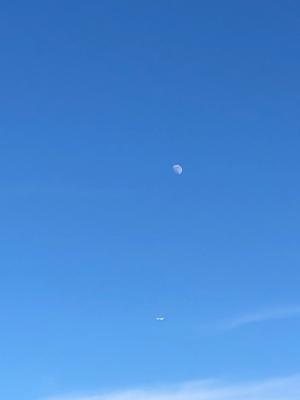
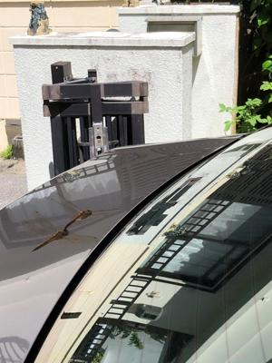

うるがいの話 ある日
最新: 義母陽性になる【うるがいの話 ある日】とは 一日だけのプログです
『うるがいの話』の最新一日だけのプログで、通信料が少なく経済的だ。カニの画像をクリックすると全ての日付が載る『うるがいの話』サイトを表示します
|
|
【うるがいの話】 うるがい(ｳﾙｶﾞｲ urugai)とは、『もずくがに』の名前でとても大きくなります。 |
|---|---|
|
|
【カミマヤーの話】 猫のことを方言でマヤーといいます。カミマヤー（kamimayaa）とは、神の猫のことです。 |
|
【たながぁの音楽】 たながぁ（ﾀﾅｶﾞｰ tanagaa）とは手長えびのことで、何種類かあり大きいのは車 エビぐらいになります。 |

|
【ぶながぁの話】 ぶながぁ(ﾌﾞﾅｶﾞｰ bunagaa)とは、赤い髪の毛、赤い身体、そして身長は１ｍ２０ｃｍ ぐらい、川の蟹を食べているの目撃された。場所は沖縄県国頭郡大宜味村のと ある村僕の隣近所に住んでいる爺さんから、聞いた話です。 |
|
|
【ギーマの話】 ギーマ(giima)とは、山原の里山に咲くスズランに似た、 花を付けます。実は食べられます、 気が付くと口の周りが紫になっています。 |
2022年08月09日 (火）義母陽性になる
16:42
 
昼過ぎ、施設からヨメのお母さんが陽性になったと連絡を受ける。症状は熱だ
けらしいが、いまのところ元気だそうだ。先週の金曜日に施設内の同じフロア
で陽性者が出て、ヨメのお母さんを検査した結果陰性だったと連絡を受けたば
かりだった、どうなることやら。私のワクチン接種の副作用は、夜中３時に熱
が出て目が覚める。準備していた熱さましを飲む、１時間程度で熱が引いてい
くのが分かった。朝７時頃は３７．１度、いまでも３７．４で若干微熱がある。
１６時３７分 ビットコインの総資産 ￥９、３１４↑